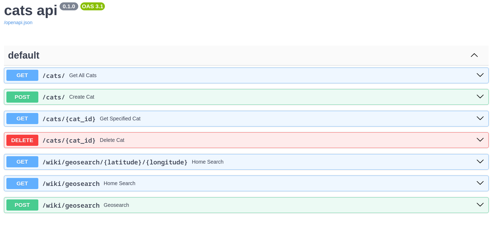

В ходе обучения реализовал несколько backend приложений.
-
Go Shortener - сервис сокращения ссылок. Реализован с использованием
архитектуры REST. Приложение полностью написано на go и поддерживает
работу по gRPC и HTTP/HTTPs. Пользователь имеет возможность создавать,
получать и удалять созданные ссылки. Реализована асинхронная работа с
удалением ссылок пользователя.
Github проекта
-
GopherMart - накопительная система интернет магазина.
Система представляет себя http сервер который решает следующие задачи:
регистрация, аутентификация и авторизация пользователей, учёт и ведение
списка переданных номеров заказов зарегистрированного пользователя, учёт и
ведение накопительного счёта зарегистрированного пользователя.
Для проверки номеров заказов реализована проверка по алгоритму Луна.
Github проекта

 vlad_marlo
vlad_marlo
 vlad-marlo
vlad-marlo